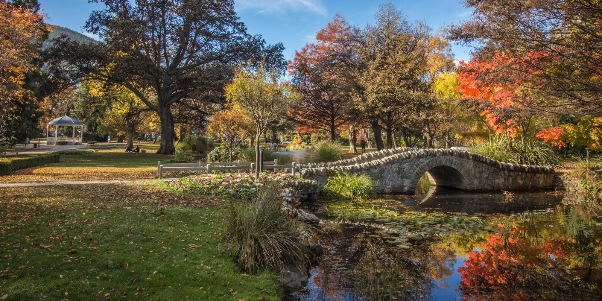
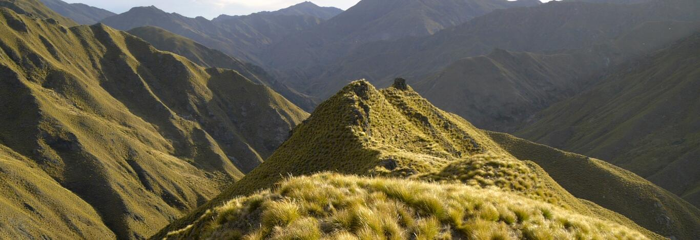

Queenstown, New Zealand is known as the adrenaline capital of the world for a reason. It is home to some of the most thrilling adventure activities on the planet, from bungy jumping and skydiving to jet boating and white-water rafting. But in recent years, Queenstown has also become a leader in sustainable tourism, with many of its adventure operators giving back to the environment and the local community.
One way that Queenstown adventure operators are giving back is by offsetting their carbon emissions. For example, Ziptrek Ecotours is Queenstown's first carbon neutral tour operator. They have offset their emissions by planting native forests in New Zealand. Another example is Shotover Jet, which is owned by Ngāi Tahu Tourism. Ngāi Tahu Tourism has always been committed to reducing its environmental impact, and is currently testing an electric jet boat prototype.
Queenstown adventure operators are also giving back by working with inclusive tourism experts to make their activities more accessible to everyone. For example, Canyon Swing has worked with Jezza Williams from Makingtrax to improve their experience for all. And Shotover Jet has done their best to make the experience as accessible as possible for people with disabilities.

The Queenstown Gardens Trail is a wheelchair-accessible trail just a few minutes from central Queenstown. The flat, easy track has spectacular views of Lake Whakatipu, Cecil Peak, and Walter Peak, and the manicured gardens are beautiful year-round.The trail is 3.1km long and takes about an hour to complete. You can start and finish the trail at the Queenstown Gardens Visitor Centre.
The trail offers stunning views of Lake Whakatipu, the longest lake in New Zealand. You can also see Cecil Peak and Walter Peak, two of the most iconic mountain peaks in Queenstown.The Queenstown Gardens Trail is a great way to experience the beauty of Queenstown's natural landscape. It's also a perfect activity for people of all ages and abilities.

Spring in Queenstown is a time for fun and discovery. The green valleys burst with fresh spring buds and green pastures yet are surrounded by snow-capped peaks, heralding the arrival of spring. Spring is a unique season when you can do everything Queenstown offers.
With the ski fields open until early October, but the basin green with fresh growth, you can ski in the morning and either golf, mountain bike or hike in the afternoons. The renowned hiking trails are open, so whether you’re enjoying spring skiing, cycling, hiking or golfing you can pack a lot of adventure into one day.
Spring skiing brings softer conditions with warmer days and a focus on fun on the mountains. It’s the perfect time to hit the slopes for social time with friends and family. Warmer days are perfect for kids or learners, while snow sports enthusiasts can continue to get their fix well into the spring months at any of the region’s diverse ski areas.

Queenstown is a spectacular walking and hiking destination with breath-taking scenery from jagged mountains and native beech forests, to wild rivers, waterfalls and glassy lakes. Untouched nature and stunning natural sights are within easy reach of Queenstown's vibrant town centre.Queenstown is near to three of New Zealand's Great Walks, two national parks and a stunning collection of short walks, day walks, and multi-day hikes. It’s easy to lace up your boots and surround yourself with awe-inspiring scenery in Queenstown, Glenorchy, Fiordland and beyond.
Whether you’re hiking with the family, looking for your next peak to conquer, or seeking a multi-day adventure, Queenstown offers walks and hikes for all ages and abilities.Plan your Queenstown hiking adventure with services including track transport, hiking equipment hire, and guided hikes with local experts.
Before heading out on your outdoor adventure, visit the Queenstown Department of Conservation for up-to-date information on mountain safety and track conditions, and the Mountain Safety Council for practical tips and planning advice. For more information on hiking tracks and activities in the lower South Island, visit the Fiordland website.Head for the hills, reconnect with nature and breathe fresh mountain air on some of the best walks in New Zealand.